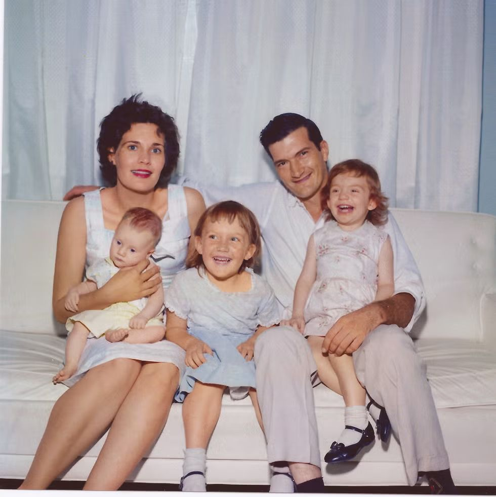

By Jeannette Walls
Summary
"'Things usually work out in the end.' 'What if they don’t?' 'That just means you haven’t come to the end yet.'"
- Jeannette Walls
The Glass Castle is Jeannette Walls’ memoir of her turbulent upbringing in a family defined by poverty, instability, and her parents’ unconventional, and often irresponsible beliefs about freedom and self-reliance. Led by her brilliant but alcoholic father, Rex, and her artist mother, Rose Mary, the Walls children move from desert towns to the dilapidated streets of Welch, enduring hunger, neglect, and emotional turmoil while clinging to each other for support. Despite Rex’s vivid promises, i.e. the dream of building a fantastical “Glass Castle”, Jeannette gradually realizes that her parents will never provide the stability she needs. Determined to break the cycle, she leaves home for New York as a teenager, builds an independent life, and ultimately reflects on her past with both love and clear-eyed honesty.

What is the scope of patriarchy and oppresion?
How does if affect the female protagonist?
In The Glass Castle, Jeannette faces danger and entrapment primarily through the actions of her father, Rex Walls, a brilliant but deeply troubled man whose need for control often harms her. Although he sees himself as a protector and a dreamer, his behavior repeatedly undermines her safety and emotional stability. His compulsive gambling drains the family of resources, which forces Jeannette to grow up in an environment marked by instability and constant uncertainty. His alcohol-driven episodes also place her at risk, since he drives while intoxicated, destroys property when angry, and creates a tense and unpredictable home life. Even his grand vision of the Glass Castle becomes a tool of manipulation, because it keeps Jeannette emotionally invested in a fantasy of a better future while distracting her from the reality of their poverty and his neglect. Through these actions, Rex traps Jeannette in a cycle of instability and emotional strain that deeply shapes her development and her understanding of what security should look like.
How does the female protagonist free herself?
How does this change her for the better moving forward?
Jeannette Walls frees herself by pursuing independence and stability in direct contrast to the chaotic lifestyle that shaped her childhood. Although the effects of her father’s behavior continue to haunt her, she uses those memories to guide her toward a life defined by responsibility and self-reliance. She rejects the version of “freedom” her father valued, recognizing that true freedom comes from security rather than disorder. Jeannette works as soon as she is able, which allows her to build financial independence and eventually leave for New York. There she creates a stable life for herself and later helps her siblings do the same, becoming the supportive figure she often lacked while growing up. Most importantly, she finds her voice. By writing her memoir, she transforms her painful experiences into a meaningful narrative that allows her to reclaim her past and articulate the strength she gained from surviving it.